Networking
Cisco Catalyst 9300, VLAN support, routers, FortiGate 100F firewalls, TCP/IP, DNS, DHCP, VPN, PoE, patch panels, access points.
IT Infrastructure • Networking • Security • Cloud
Hands-on IT professional supporting physical servers, Cisco switching, FortiGate firewalls, Microsoft 365, Azure, Intune, Hyper-V, backups, structured cabling, PoE cameras, and access-control systems.
About Me
I am an IT professional with practical experience supporting business technology infrastructure across networking, systems, cloud services, endpoint management, physical security, backups, and monitoring.
My work includes supporting Dell PowerEdge physical servers, Windows Server 2019, Hyper-V virtual machines, FortiGate firewalls, Cisco Catalyst switching, Microsoft 365 services, Intune-managed endpoints, structured Ethernet cabling, PoE security cameras, and access-control systems.
I am focused on growing toward network engineering, systems administration, and security-focused infrastructure roles.
Network Engineer • Systems Administrator • Infrastructure Technician • Security Technician • Microsoft 365 / Endpoint Administrator
Technical Skills
Cisco Catalyst 9300, VLAN support, routers, FortiGate 100F firewalls, TCP/IP, DNS, DHCP, VPN, PoE, patch panels, access points.
Dell PowerEdge R410, R720, R630, T610, R740 servers, Windows Server 2019, Hyper-V, domain services, server troubleshooting.
Microsoft 365, Azure, Entra ID, Intune, device enrollment, user licensing, MFA support, directory synchronization to Microsoft 365.
Wazuh monitoring, Bitdefender appliances, vulnerability review, firewall support, access-control systems, security camera systems.
Veeam, backup verification, job troubleshooting, storage targets, recovery readiness, server protection, business continuity support.
Ethernet cabling, terminations, rack organization, cable labeling, PoE cameras, Galaxy access-control appliances, Speco Tech NVR systems.
Environment Experience
Supported a Dell PowerEdge server environment including R410, R720, R630, T610, and R740 systems running Windows Server 2019.
Supported virtual servers running on Windows Hyper-V, including domain controllers, DNS, DHCP, VPN services, directory sync to Microsoft 365, Bitdefender appliances, and Veeam.
Supported Galaxy access-control appliances and Speco Tech security camera systems with NVR and PoE connectivity.
Featured Projects
Designed and documented a cloud infrastructure lab using Amazon Web Services. The project included MFA account security, S3 static website hosting, VPC networking, public and private subnets, EC2 instances, route tables, Internet Gateway configuration, VPC peering, connectivity testing, CloudWatch monitoring, cost estimation, and resource cleanup.
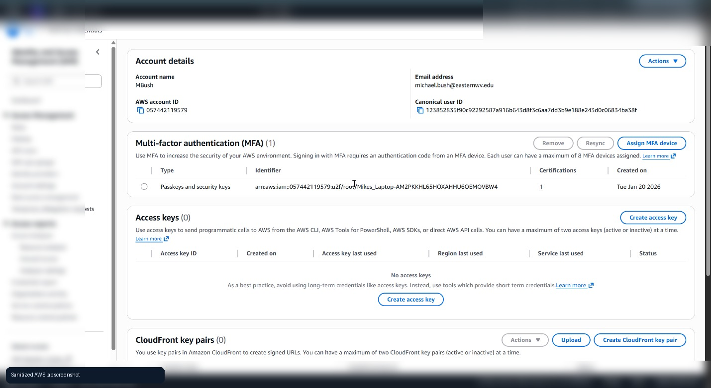
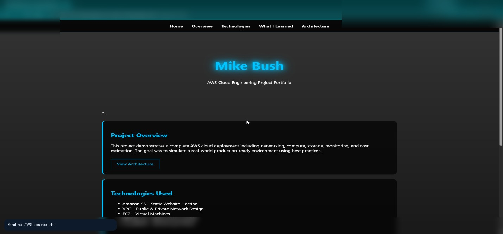
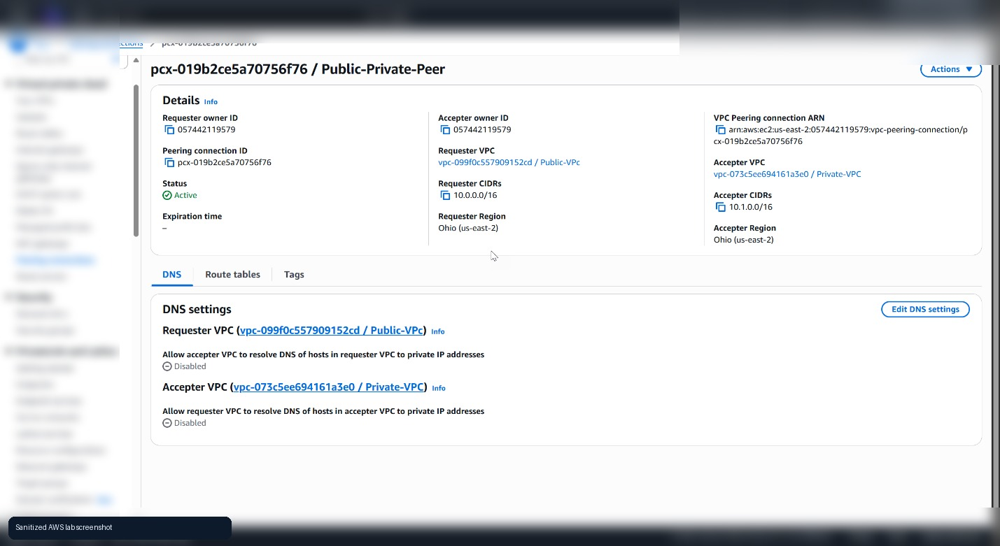
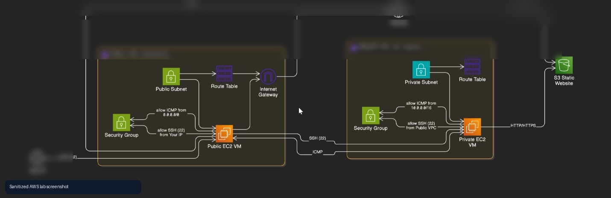
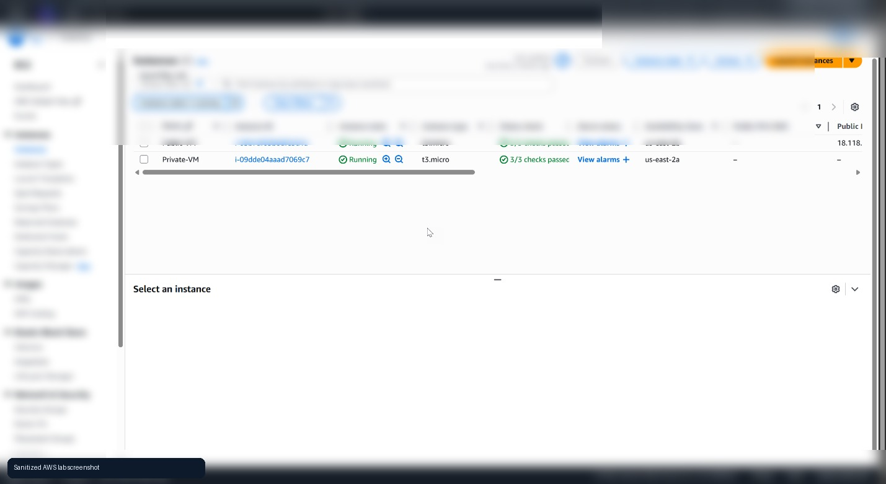
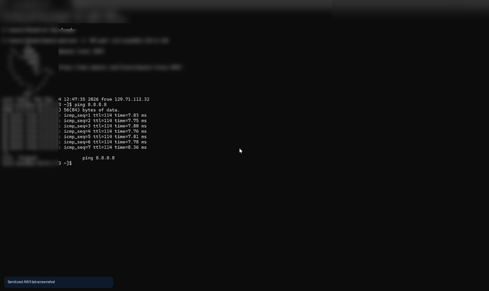
Outcome: Demonstrated practical cloud administration skills including AWS networking, compute deployment, monitoring, cost awareness, security, and lifecycle cleanup.
Supported a business VoIP phone environment using three Ubiquiti EdgeSwitches on a separate voice network to provide PoE power and network connectivity for approximately 120 Snom 720 IP phones.
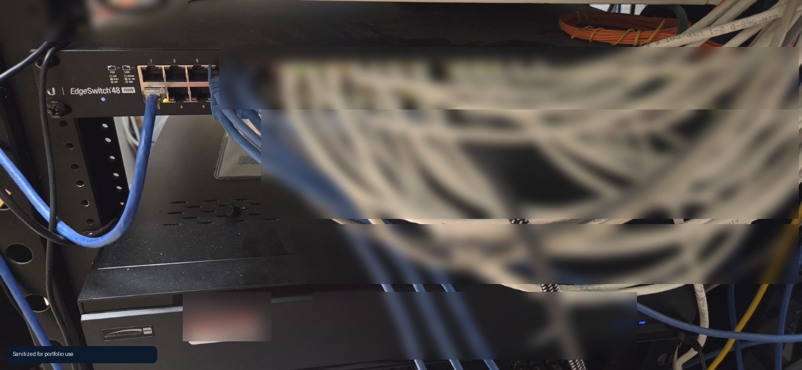
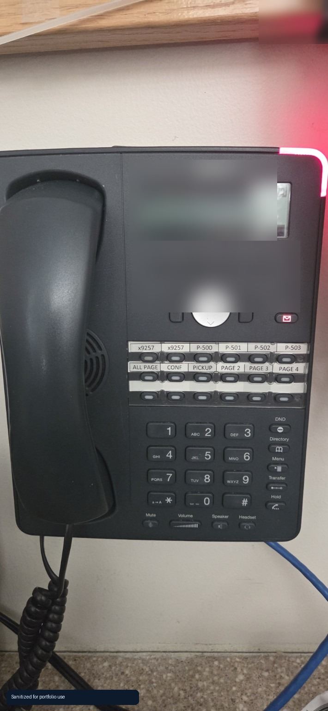
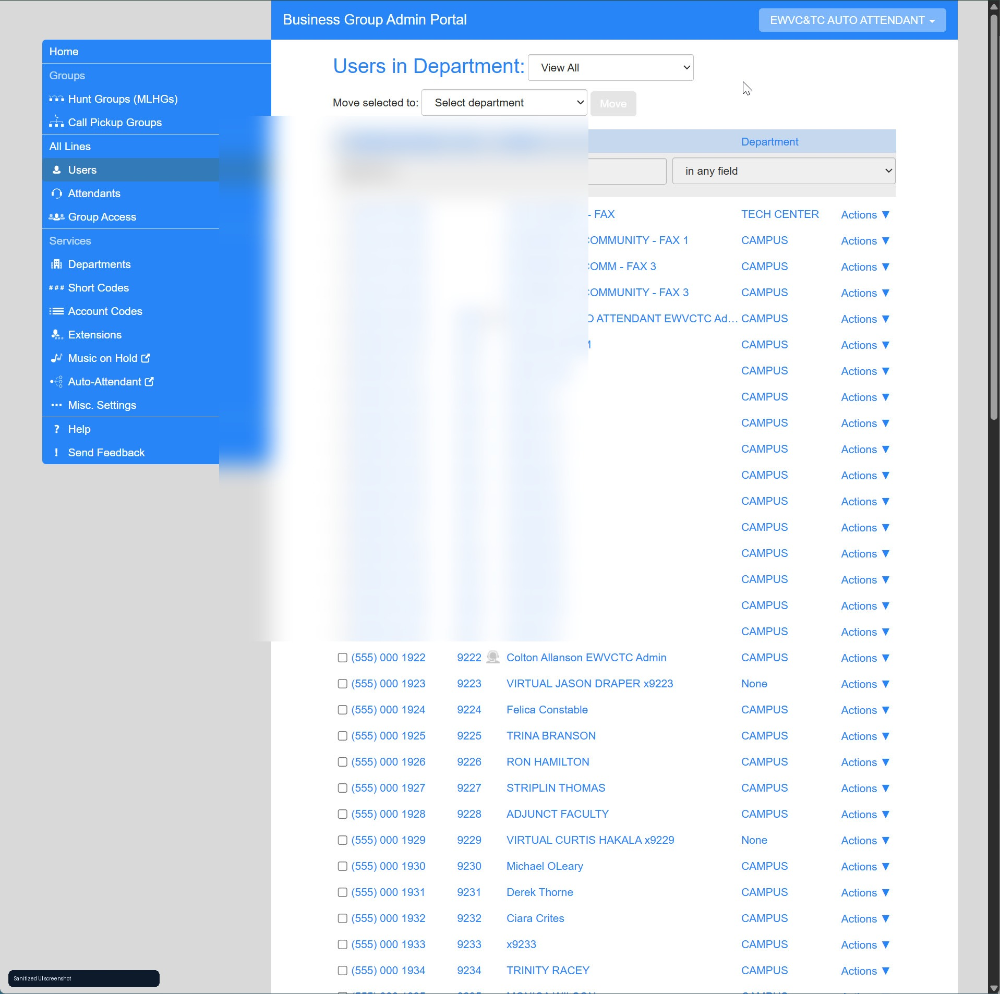
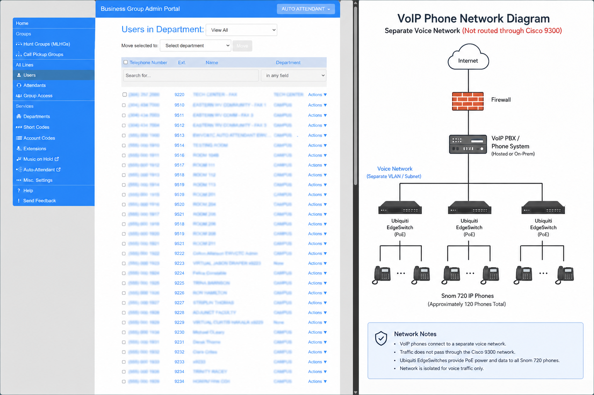
Outcome: Helped maintain reliable VoIP phone service by supporting PoE switching, endpoint connectivity, cabling, and physical network infrastructure.
Supported a hybrid Microsoft environment involving Microsoft 365 administration, Entra ID identity services, directory synchronization, endpoint management concepts, licensing, service health review, and cloud-connected user access support.
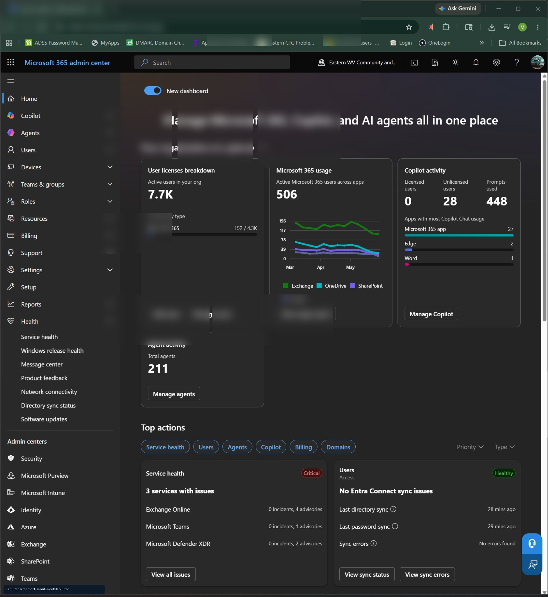
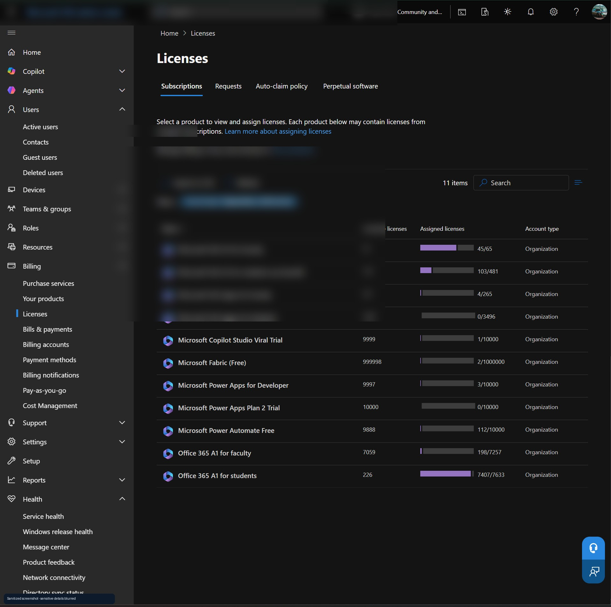
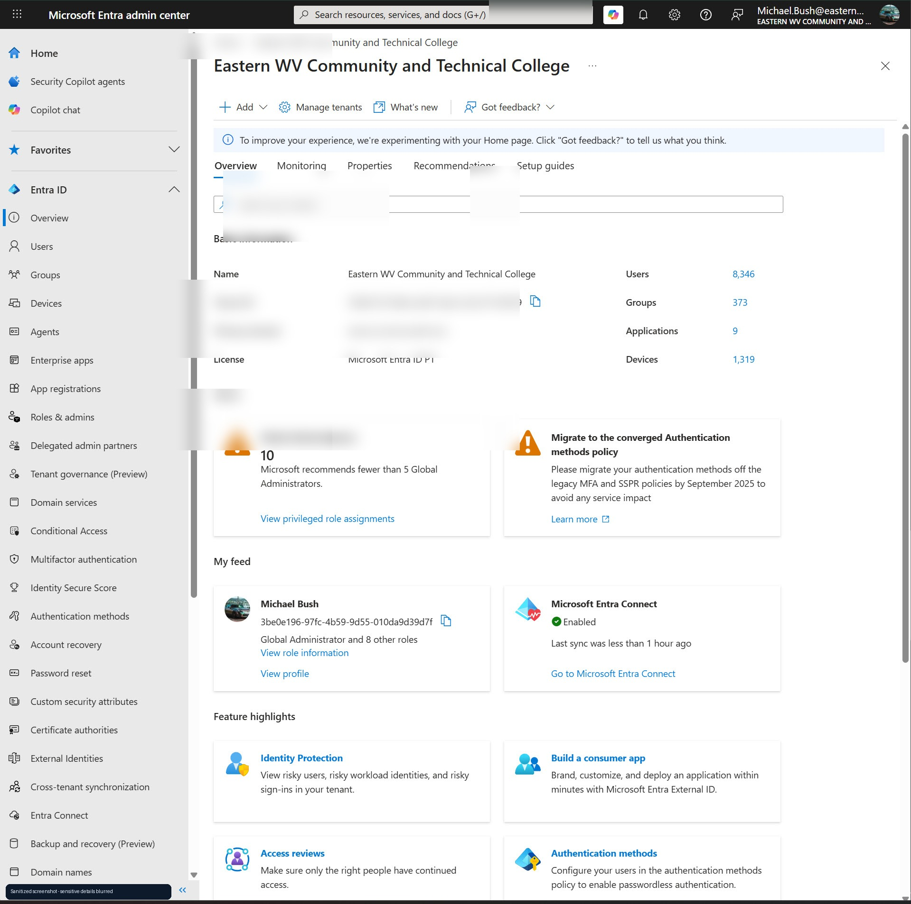
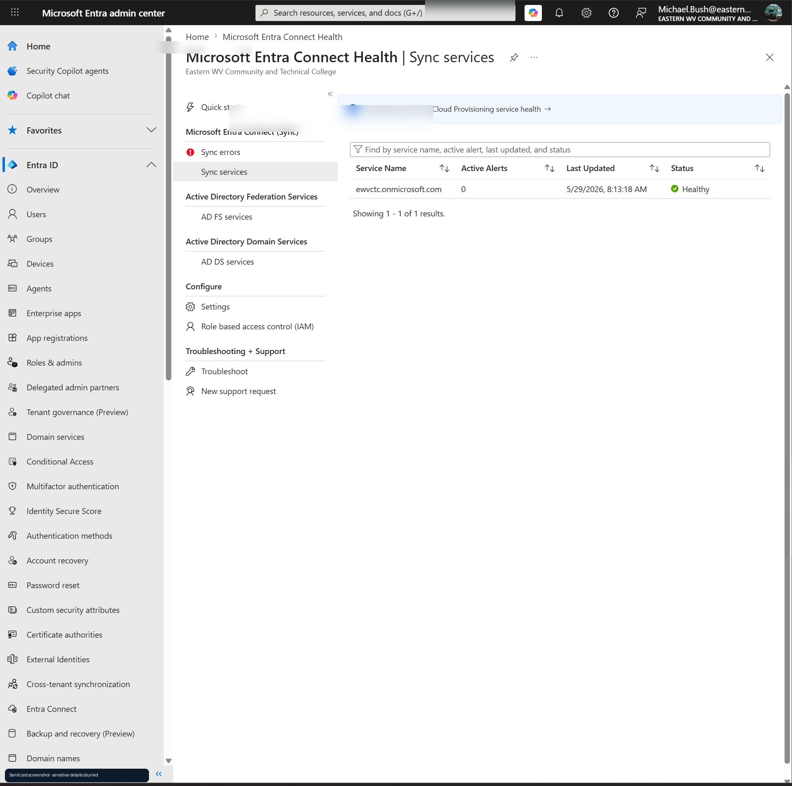
Outcome: Demonstrated hands-on experience with Microsoft 365, Entra ID, directory synchronization, licensing, service health review, and cloud administration workflows.
Created a sanitized logical network architecture diagram showing segmented VLAN design, FortiGate firewall placement, Cisco Catalyst 9300 switch stacks, Windows Server/Hyper-V infrastructure, Microsoft 365 connectivity, physical security systems, wireless networks, and monitoring devices.
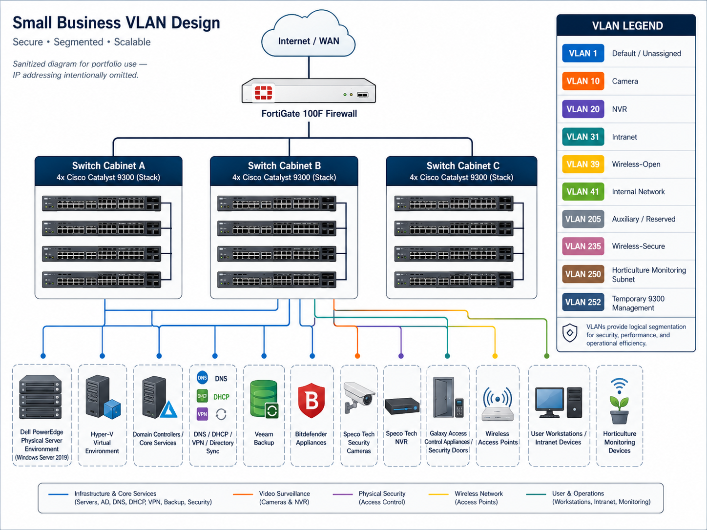
Outcome: Built a clear, sanitized network design artifact that demonstrates VLAN segmentation, network documentation, infrastructure mapping, and security-aware design.
Supported enterprise network infrastructure involving Cisco Catalyst 9300 switches, FortiGate 100F firewalls, routers, Ethernet cabling, PoE devices, and endpoint connectivity.
Outcome: Helped maintain reliable connectivity for users, servers, security systems, and network devices.
Supported multiple Dell PowerEdge servers running Windows Server 2019, including rack, tower, and enterprise-class systems.
Outcome: Improved infrastructure reliability through hands-on server support.
Supported Windows Hyper-V virtual machines providing core business services including domain control, DNS, DHCP, VPN, directory sync, security appliances, and backup services.
Outcome: Helped support core identity, network, and cloud-connected services.
Assisted with Wazuh monitoring for endpoint/server visibility, vulnerability review, and security event awareness.
Outcome: Increased visibility into security posture and endpoint health.
Supported backup operations involving Veeam, Windows servers, storage targets, credentials, and job troubleshooting.
Outcome: Helped maintain data protection and business continuity.
Supported Galaxy access-control appliances and Speco Tech security camera systems with NVR and PoE connectivity.
Outcome: Helped maintain reliable physical security infrastructure.
Project Documentation
This project documents a sanitized small-business network design using FortiGate firewall security, Cisco Catalyst 9300 switch stacks, segmented VLANs, Windows Server infrastructure, Hyper-V services, Microsoft 365 integration, physical security systems, and monitoring devices.
The design places the FortiGate 100F firewall at the network edge between the Internet/WAN and the internal switching environment. Three switch cabinets are represented as Cisco Catalyst 9300 switch stacks, with each cabinet containing four switches functioning as one logical stack. Core infrastructure, servers, cameras, access-control systems, wireless access points, workstations, and monitoring devices connect through the switching layer.
| VLAN | Purpose | Portfolio-Safe Description |
|---|---|---|
| VLAN 1 | Default / Unassigned | Default VLAN shown as unused or minimized for security best practice. |
| VLAN 10 | Camera | Used for Speco Tech security cameras and video surveillance endpoints. |
| VLAN 20 | NVR | Used for the Speco Tech NVR or video recording system. |
| VLAN 31 | Intranet | Used for internal users, workstations, and intranet-connected devices. |
| VLAN 39 | Wireless-Open | Used for open or guest-style wireless access. |
| VLAN 41 | Internal Network | Used for internal infrastructure and operational systems. |
| VLAN 205 | Auxiliary / Reserved | Reserved or auxiliary VLAN documented for completeness. |
| VLAN 235 | Wireless-Secure | Used for secure wireless access requiring stronger access control. |
| VLAN 250 | Horticulture Monitoring Subnet | Used for monitoring devices separated from general workstation traffic. |
| VLAN 252 | Temporary 9300 Management | Used for temporary management access to Cisco 9300 switching equipment. |
This diagram is intentionally sanitized for public portfolio use. IP addresses, port numbers, firewall rules, internal hostnames, usernames, company names, and sensitive routing details are omitted. The goal is to show design understanding without exposing a real production environment.
Project Documentation
This project documents hands-on experience supporting a hybrid Microsoft cloud environment. The environment includes Microsoft 365 administration, Entra ID identity services, licensing, service health review, directory synchronization, and endpoint management concepts.
All screenshots are sanitized for public portfolio use. Tenant names, user accounts, organization identifiers, tenant IDs, domains, counts, service details, and other sensitive information have been blurred or removed.
Project Documentation
This project documents support for a business VoIP phone network using Ubiquiti EdgeSwitches to provide PoE power and Ethernet connectivity to approximately 120 Snom 720 IP phones. The environment supports daily business communications and requires reliable switching, cabling, and endpoint availability.
The VoIP phone environment is documented as a separate voice network. The Snom 720 phones connect to the Ubiquiti EdgeSwitch PoE switching environment and do not pass through the Cisco Catalyst 9300 network. This distinction is important because it accurately represents how voice traffic is separated from the main data switching environment.
VoIP systems are business-critical because phone outages directly affect communication, support, safety, and daily operations. Supporting a 120-phone deployment demonstrates experience with endpoint scale, PoE infrastructure, physical cabling, and production troubleshooting.
The VoIP environment also includes a browser-based administrative portal used to manage users, departments, auto-attendants, hunt groups, call pickup groups, extensions, and related voice-service settings. For public portfolio use, all user-specific entries, telephone numbers, extensions, and organizational identifiers are blurred.
A corrected sanitized logical network diagram was created to document the VoIP environment as its own separate voice network. The VoIP phones connect through three Ubiquiti EdgeSwitch PoE switches and do not pass through the Cisco Catalyst 9300 network. The diagram shows the hosted voice/admin portal relationship, firewall/voice-network boundary, PoE switching, and approximately 120 Snom 720 IP phones.
Public documentation should not show phone extensions, user names, switch hostnames, MAC addresses, IP addresses, VLAN details, internal room mappings, cable labels, asset tags, company-specific identifiers, or administrative portal data. The included photos and UI screenshot were sanitized by blurring the phone display, extension labels, cable markings, visible asset/company labels, and user/telephone data in the admin portal before publishing.
Project Documentation
This lab documents a cloud infrastructure project completed using Amazon Web Services. The goal was to demonstrate fundamental cloud engineering skills by designing a secure, segmented, and monitored AWS environment while also considering cost and cleanup.
AWS was selected because it provides commonly used industry services for compute, storage, networking, security, and monitoring. The project focused heavily on VPC networking because it demonstrates important cloud design principles such as segmentation, routing, internet access, and private resource isolation.
Connectivity testing was performed to validate the design. The public instance was tested for internet access, while the private instance was tested to confirm that it did not have direct internet access. Internal connectivity between instances was also tested to verify routing behavior and private communication.
A CloudWatch alarm was configured to monitor high CPU utilization on an EC2 instance, using a threshold-based alerting approach. Cost estimation was reviewed using AWS Pricing Calculator, and resources were cleaned up after the lab to prevent ongoing charges.
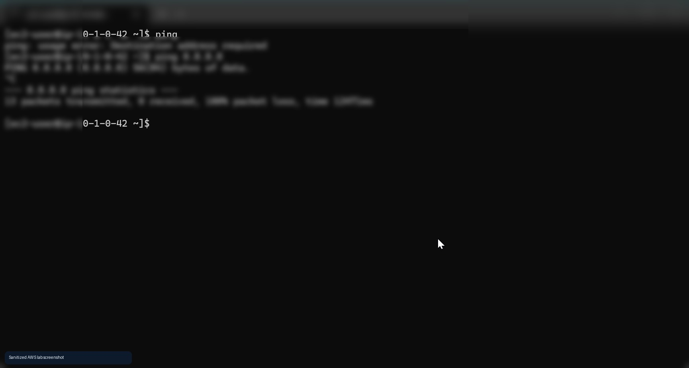
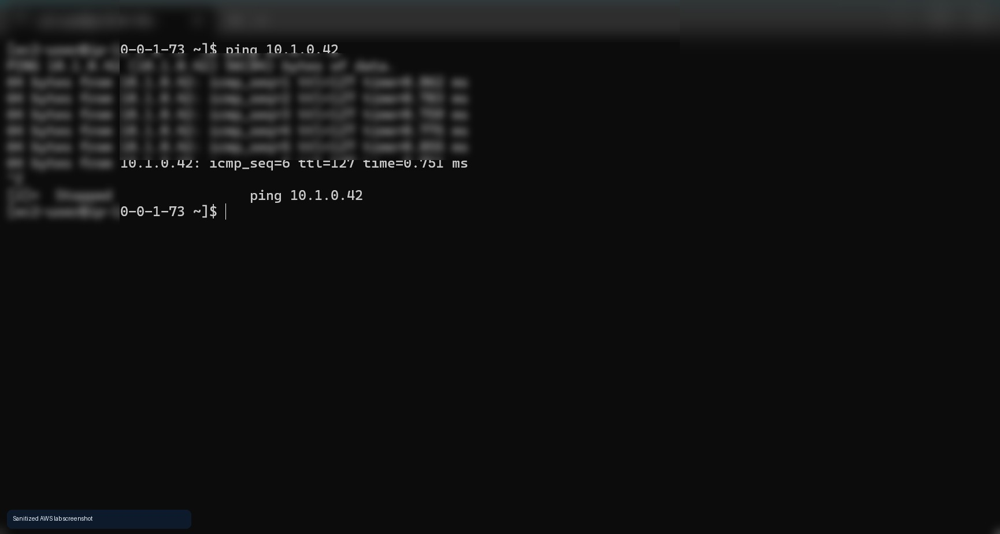
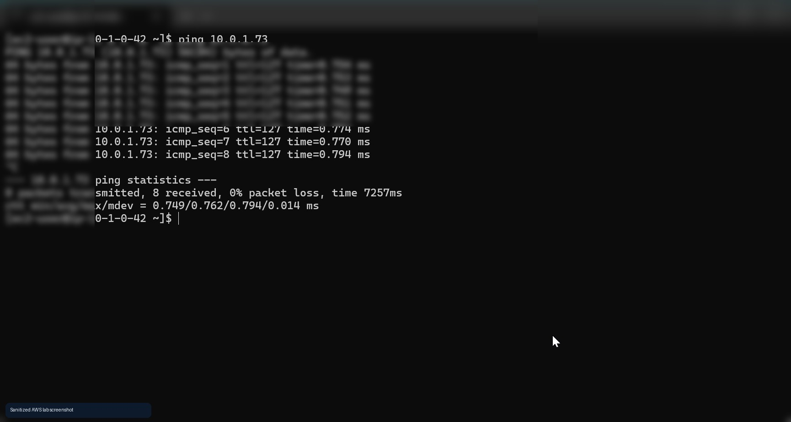
Screenshots were sanitized for public portfolio use. Account information, browser/account areas, instance identifiers, network details, and potentially sensitive values were blurred where appropriate. The documentation focuses on skills demonstrated rather than exposing a real AWS account configuration.
Contact
I am interested in roles involving network support, systems administration, Microsoft cloud administration, security monitoring, and infrastructure support.